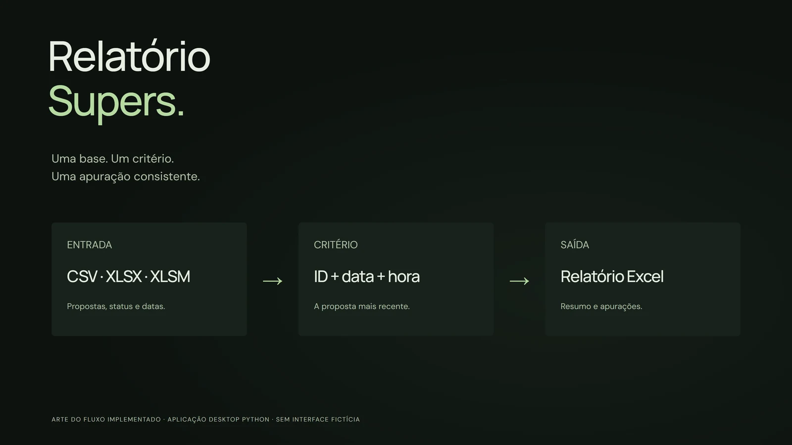
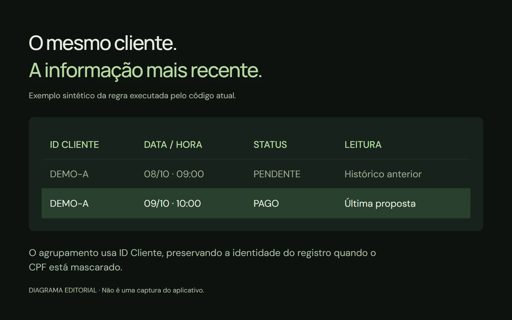
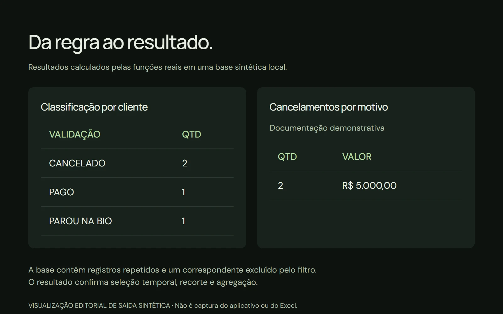

Relatório
Supers.
Uma base pode ter muitas tentativas.
A apuração precisa entender
qual registro conta agora.
Melhoria de processamento demonstrada
- Desafio
- Propostas repetidas, CPFs mascarados e mudanças de status podiam confundir a apuração.
- Minha contribuição
- Implementei validação, agrupamento por ID Cliente, seleção temporal e relatórios Excel em uma aplicação desktop.
- Resultado / melhoria
- Normalização e preparação de Excel automatizadas, sem agrupar pessoas diferentes pelo CPF mascarado. Regras verificadas com dados sintéticos.

Arte original do fluxo de processamento, com master em 4K. Esta apresentação documenta uma aplicação desktop; as imagens são diagramas editoriais, não capturas de um dashboard ou da janela nativa.
O relatório começa
na escolha da chave.
Um cliente pode aparecer em várias propostas, com status e horários diferentes. Somar as linhas sem compreender essa sequência mistura histórico e situação atual.
O que construí
Uma aplicação Python com interface gráfica para selecionar a base e gerar relatórios de Não Assinados, Cancelados ou Geral. A lógica normaliza os dados, aplica o recorte de correspondentes e organiza resumos e apurações em Excel.
A identidade do cliente.
O momento da proposta.
A leitura da operação.
A versão atual usa ID Cliente como chave de agrupamento. Isso evita unir pessoas diferentes quando o CPF vem mascarado. A classificação considera a proposta mais recente por data e hora, com fallback para a ordem dos registros quando a data não é interpretável.
A última proposta
muda a leitura.
O exemplo abaixo usa registros sintéticos. A regra de seleção foi executada diretamente a partir das funções do projeto, em ambiente local isolado.

Uma saída que pode
ser conferida.
Na base de demonstração, as funções classificam os clientes e agregam cancelamentos por motivo. Os números ilustram o processamento; não são resultados produtivos.

Da escolha do arquivo
à entrega do relatório.
A janela desktop oferece três modos, seleção de arquivo e progresso durante a execução. O processamento acontece em uma thread, com mensagens de conclusão e recuperação de erros.
O projeto inclui empacotamento com PyInstaller e um executável Windows existente. A geração de Excel possui cabeçalhos, filtros, totais e abas de apuração conforme o modo selecionado.
Entrada e validação
CSV, XLSX e XLSM são formatos aceitos. A leitura detecta separador no CSV, verifica colunas obrigatórias e normaliza textos, status, datas e valores monetários. Correspondentes fora do recorte configurado são filtrados.
Modos e saída em Excel
Não Assinados, Cancelados e Geral possuem rotinas próprias. O código organiza resumos e detalhe em abas como Não assinados, Cancelados, Apuração Não assinados, Apuração Parou na bio e Apuração Cancelados. A disponibilidade das abas depende do modo e dos dados processados.
Critérios que sustentam a apuração
A chave por cliente e a seleção temporal organizam o histórico de propostas. Cancelamentos recebem agregação por motivo e valor, oferecendo uma leitura própria para cada modalidade de relatório.